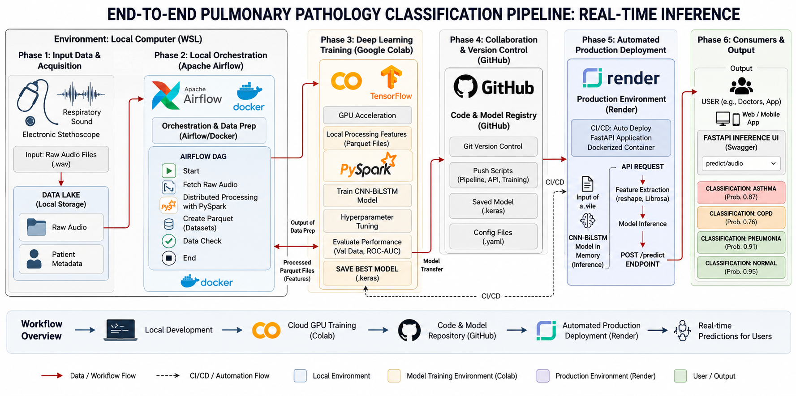
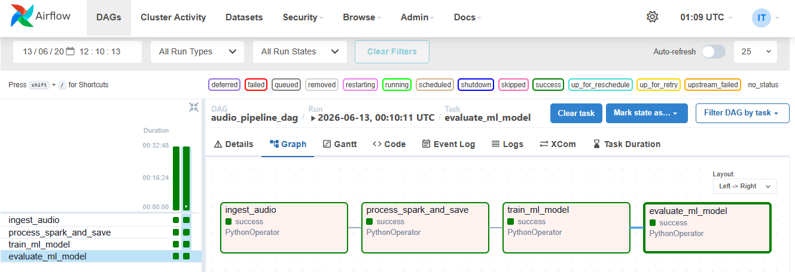
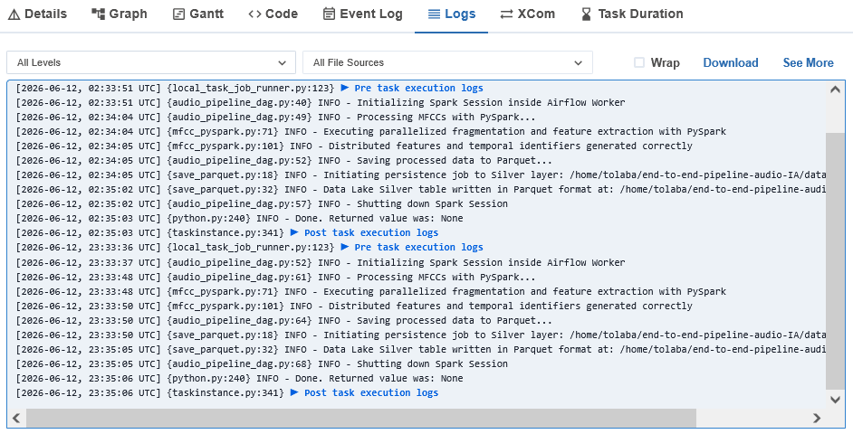
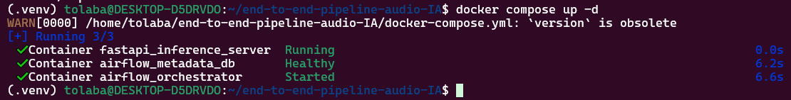
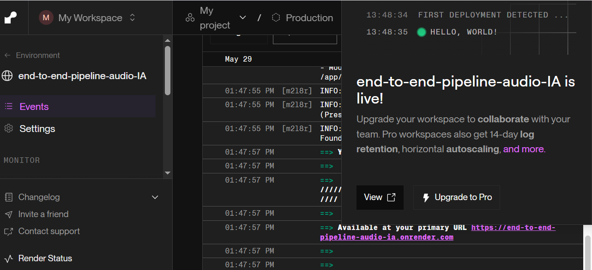
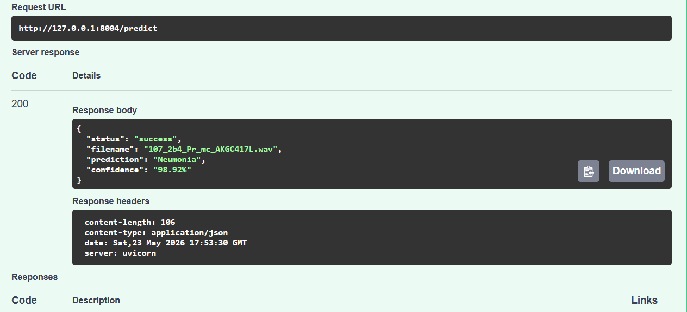
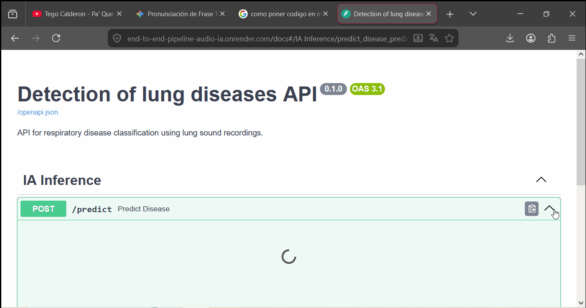

Arquitectura End-to-End para Detección de Enfermedades Pulmonares
- Tareas:
- • Diseñé e implementé una arquitectura End-to-End para el procesamiento y despliegue de modelos de Machine Learning.
- • Desarrollé pipelines ETL distribuidos con PySpark para la ingesta, limpieza, segmentación y extracción de características acústicas (MFCC).
- • Orquesté el flujo completo mediante Apache Airflow, automatizando el procesamiento, entrenamiento y evaluación de modelos.
- • Implementé una arquitectura MLOps con Docker, FastAPI y Render para inferencia en tiempo real.
- • Incorporé pruebas con Pytest y versionado con Git/GitHub.

Tecnologías: Python • PySpark • Apache Airflow • Docker • FastAPI • Render • Git • GitHub

1. Orquestación del Pipeline con Apache Airflow

2. Monitoreo y Registro de Ejecuciones (Logs)

3. Contenerización del Proyecto con Docker Compose

4. Despliegue del Modelo en Producción (Render)

5. API REST y Documentación Interactiva (Swagger UI)

6. Demostración de Inferencia en Tiempo Real
